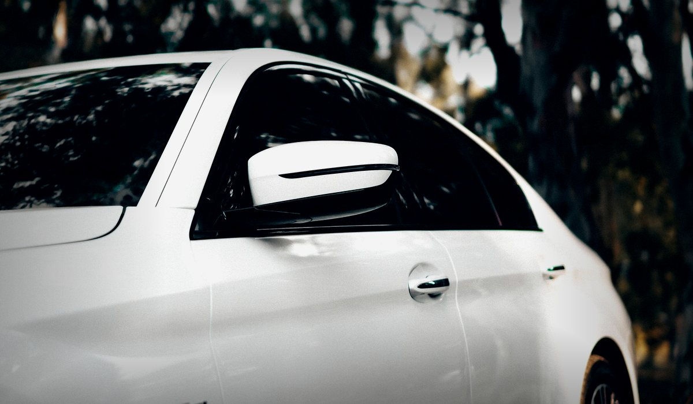
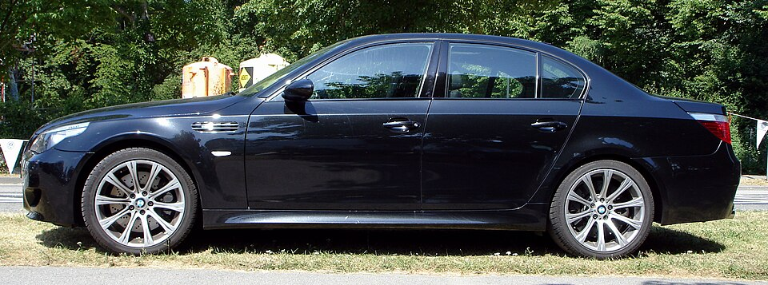
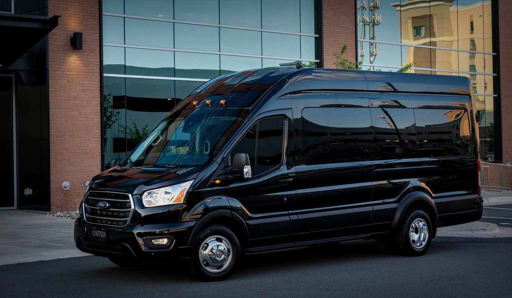

7/24 aktif - 5 dakika içinde araç
NOKTA TRANSFER
Nokta Transfer hizmetimiz, şehrin karmaşık trafiğinde en zorlu saatlerde bile hayatınızı kolaylaştırmak için tasarlanmış profesyonel bir ulaşım ağıdır. Lüks, konforlu ve ekonomik seyahatin tek adresi olarak daima yanınızdayız.
✓ SABİT FİYAT
✓ ŞOFÖRLÜ LÜKS
✓ 7/24 KESİNTİSİZ
Rota Belirleyin
Hızlı ve şeffaf ulaşım
Türkiye genelinde şehir, sokak ve cadde arayın.
⌁ MESAFE
-
Rota seçilmedi
⊙ ÜCRET
0 TL
0-6 km sabit 200 TL
Otoban ücreti toplam fiyata eklenir.
Şimdi Araç ÇağırDaha net fiyat ve rota bilgisi için bize ulaşın.
ŞEFFAF FİYAT TAHMİNİ
Şeffaf Fiyat Tahmini
İzmir'in neresine giderseniz gidin, ne ödeyeceğinizi önceden görün. 0-6 km arası sabit 200 TL, sonrası 30 TL/km; 100 km'den itibaren 25 TL/km hesaplanır.
Mesafe
24 km
24 km
Ortalama tahmini ücret
740 TL
0-6 km sabit 200 TL + sonrası 30 TL/km
Şehrin Güvenilir Ulaşım Merkezi
İzmir içinde kısa mesafe, havalimanı transferi, gece yolculukları ve şehir dışı planlarınız için hızlı dönüş sağlayan özel transfer ekibimizle her zaman ulaşılabilir durumdayız.
Misafirlerimizi ailemizden birini taşıyormuş hassasiyetiyle ağırlıyoruz. Kadın yolcularımızın gece geç saatlerdeki güvenliğinden yaşlı hastalarımızın konforuna kadar her senaryoyu ince ayrıntısına kadar değerlendirerek hizmet standartlarımızı sürekli güncelliyoruz.
NASIL ÇALIŞIR
3 adımda net transfer
Uzun telefon görüşmeleri, belirsiz fiyatlar ve son dakika araç arama stresi olmadan; rotayı seçin, tahmini ücreti görün, aracı çağırın.
Rota Seç
Alınacak ve gidilecek adresi yazın; mesafe, süre ve ücret tahmini otomatik hesaplansın.
Yolu Belirle
Normal yol veya otoban tercihini seçin. Otoyol ücreti bulunursa toplam tahmine eklenir.
Aracı Çağır
WhatsApp ya da telefonla tek dokunuşta ulaşın; araç bilgisi ve rota netleşsin.
Adnan Menderes karşılama
Geniş bagaj alanı
Şehir içi kısa rota
Çeşme ve sahil hattı
Gece güvenli ulaşım
HIZLI REZERVASYON
Uçuş takipli
İniş saati değişirse plan güncellenir.
Araç başı net ücret
Yolcu sayısı değil rota ve araç planı esas alınır.
Kapıdan kapıya
Ev, otel, marina, terminal ve fuar noktalarına ulaşım.
Transfer talebini tek mesajla netleştir
Alınacak yer, varış noktası, yolcu sayısı, bagaj ve uçuş bilgisi tek mesajda gelsin; ekip doğru araç tipini ve rota bilgisini hızlıca hazırlasın.
TRANSFER STANDARDI
Yolculuktan önce her detay belli
İzmir transfer arayan yolcuların en çok ihtiyaç duyduğu şey hız, fiyat netliği ve güvenli karşılama. Nokta Transfer bu üç noktayı tek akışta toplar.
Adnan Menderes Havalimanı
Uçuş numarasıyla iniş takibi, terminal çıkışı yönlendirmesi ve bagaj sürecine göre araç planı.
Otel, fuar ve marina
Çeşme, Alaçatı, Urla, Foça, Selçuk ve merkez otel bölgeleri için kapıdan kapıya transfer.
Şehirlerarası rota
İstanbul, Bursa, Aydın, Denizli ve Ege hattında otoban tercihiyle ücret kalemi açık gösterilir.
Kurumsal ulaşım
Toplantı, fuar, ekip taşıma ve VIP misafir planlarında saatli araç yönlendirme desteği.
POPÜLER TRANSFER HATLARI
İzmir'in en çok aranan rotaları
Havalimanı, sahil hattı ve merkez ilçelerde sık kullanılan güzergahları tek ekranda topladık.
Adnan Menderes çıkışlı
Çeşme Transfer
Alaçatı, marina, otel ve yazlık bölgeler
Sahil hattı
Urla Transfer
İskele, bağ yolu, Güzelbahçe bağlantısı
Merkez rota
Karşıyaka Transfer
Bostanlı, Mavişehir, Bornova ve Konak bağlantısı
Üniversite ve iş hattı
Bornova Transfer
Ege Üniversitesi, Forum, havalimanı ve merkez
Turistik rota
Selçuk Transfer
Efes, Şirince, otel ve havalimanı ulaşımı
Kuzey sahil
Foça Transfer
Eski Foça, Yeni Foça ve sahil güzergahları
Havalimanı odaklı hızlı hatlar
İzmir transfer aramalarında öne çıkan rotalar
Kesintisiz Hizmet Ağı
Metropol sınırları içerisindeki stratejik durak noktalarımız ve bekleyen araçlarımızla tüm ilçelere dakikalar içinde ulaşım sağlıyoruz.
Merkez Noktalar
Aliağa, Balçova, Bayındır, Bayraklı, Bergama, Beydağ, Bornova, Buca, Çeşme, Çiğli, Dikili, Foça, Gaziemir, Güzelbahçe, Karabağlar, Karaburun, Karşıyaka, Kemalpaşa, Kınık, Kiraz, Konak, Menderes, Menemen, Narlıdere, Ödemiş, Seferihisar, Selçuk, Tire, Torbalı ve Urla.
Sahil Hattı
Foça, Aliağa, Dikili, Karaburun, Mordoğan, Ürkmez, Gümüldür, Çeşme, Urla, Güzelbahçe, Narlıdere ve Seferihisar.
Transfer Rotaları
Adnan Menderes Havalimanı, İzmir Otogarı, Alsancak Garı, fuar, otel, liman ve şehir dışı güzergahlar.
Araç Seçenekleri
Tek kişi yolculuktan VIP transferlere kadar ihtiyacınıza uygun, temiz ve konforlu Nokta Transfer araçları.
EN POPÜLER
Standart
Konfor Sedan
NOKTATRANSFER

- 4 Yolcu Kapasitesi
- 2 Orta Boy Valiz
- Klima & Hijyen Paketi
- Ekonomik Seçenek
4-8
2-4
DETAYLAR ⓘ
BUSINESS
+ %25
Premium Sedan
NOKTATRANSFER

- Lüks Deri Döşeme
- Geniş Diz Mesafesi
- Ücretsiz Wi-Fi
- USB Şarj Terminali
4-8
2-4
DETAYLAR ⓘ
VIP VAN
+ %50
VIP Black
NOKTATRANSFER

- Grup Taşımacılığı
- 6-8 Kişilik Alan
- Minibar & İkram
- Özel Karşılama
4-8
2-4
DETAYLAR ⓘ
Sıkça Sorulan Sorular
İzmir transfer çağırdığımda ne kadar sürede gelir?
Konumunuza göre değişmekle birlikte merkez ilçelerde ortalama 5-15 dakika içinde araç yönlendirilir.
Fiyatı yolculuk öncesi öğrenebilir miyim?
Evet. Konum ve varış noktanızı WhatsApp üzerinden paylaştığınızda net ücret bilgisi verilir.
Havalimanı transferi var mı?
Adnan Menderes Havalimanı için karşılama ve bırakma transferi 7/24 yapılır.
Uçuş gecikirse araç bekler mi?
Uçuş numarası paylaşıldığında iniş saati kontrol edilir. Gecikme olduğunda araç planı buna göre güncellenir.
Kurumsal ve şehirlerarası transfer yapılır mı?
Evet. Fuar, otel, toplantı, VIP misafir ve şehirlerarası rota taleplerinde uygun araç planı yapılır.
YOLCU GÖRÜŞLERİ
"Gece geç saatte Alsancak'tan evime dönerken kullandım. Şoför bey çok nazik, araç ise tertemizdi. Ödediğim rakam çok daha uygun geldi."
— Merve T."Adnan Menderes'ten indikten sonra WhatsApp üzerinden konum attım. Valizimi aldığımda araç hazırdı, fiyatı da baştan söylediler."
— Alper G."Oğlumu Ege Üniversitesi yurdundan hep onlara emanet ediyorum. Şehirde böyle düzgün esnaf bulmak zor gerçekten."
— Nermin S.